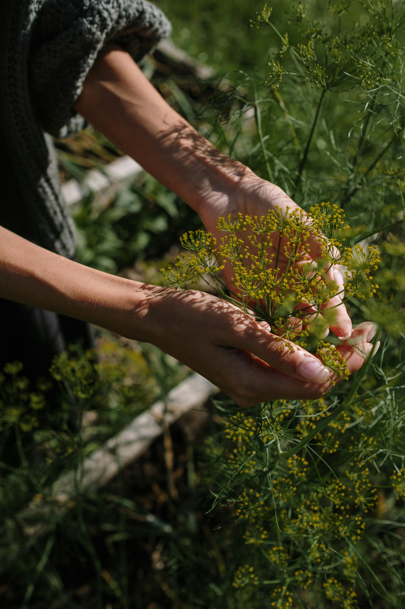

Dill
Origin
It is native to the eastern Mediterranean region and western Asia. The word dill comes from the old Norse word dylla, meaning to soothe or lull. It dates back in writing to about 3000 B.C. when it earned a mention in Egyptian medical texts.(spruceEats)
Dill
Care
Dill thrive in sunny locations. Space plants 8-12 inches apart to allow for proper growth and airflow.
- Direct Sunlight
- Prefers well-drained soil, slightly acidic to neutral pH (5.5–7.0).
- moist soil but not soggy conditions
Best grown in cooler weather (60-70°F, or 15-21°C).
More Research
Here are some articles that I got some of the above information/more research you can do on your own.